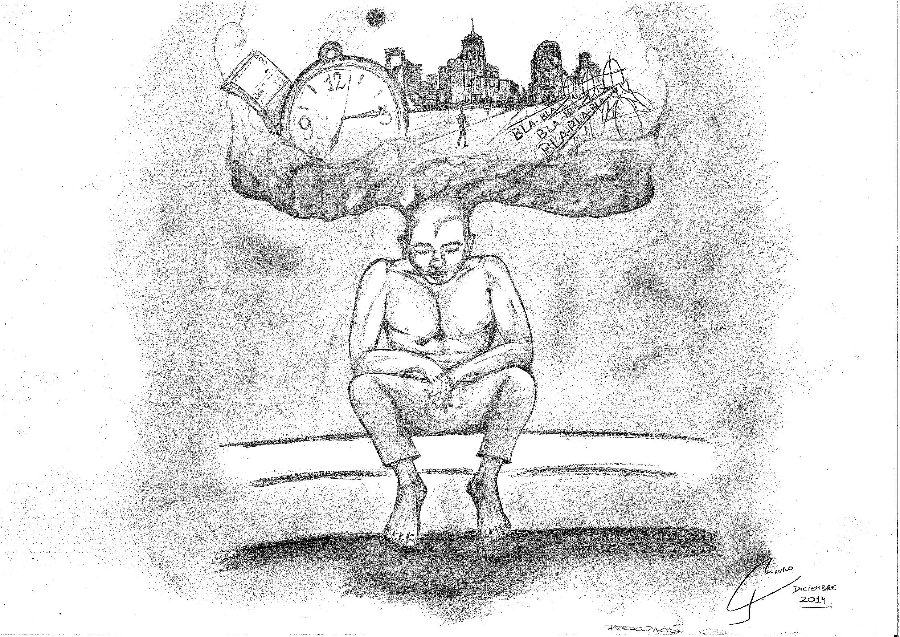

Por Bernardo Penoucos (docente en la Unidad Penitenciaria
N° 2 de Sierra Chica) // Ilustración: Mauro Gonzales
Humedad, palabras y
encierro

Son 12 pabellones. 1700 personas alojadas en 12 pabellones.
Hermanitos, “cachivaches”, homosexuales, estudiantes y trabajadores construyen su vida cotidiana desde el encierro que la Unidad 2 de máxima seguridad en Sierra Chica propone, impone y dispone. Hay, entre toda esta población privada de su libertad, un gran porcentaje de procesados que aun mantienen la presunción de inocencia, no han tenido condena y esperan desde la sombra mas lúgubre que la Justicia decida por fin si abrazarán la libertad o seguirán mordiendo el óxido de una reja. Hay muchos pibes jóvenes, gran mayoría de pibes jóvenes: el promedio de edad de los detenidos ronda los 23, 24 o 25 años.
Son jóvenes negados y escupidos por el sistema y la sociedad de consumo, jóvenes que desde niños han embarrado sus zapatillas en las calles de tierra para llegar a la escuela que no pudo contenerlos, para llegar al proyecto de vida que no pudo sostenerlos. De la villa al Instituto, del Instituto al penal, del penal a la noche larga del pabellón, al hacinamiento, a la violencia institucionalizada, al miedo constante de que la muerte gane la partida. Los ojos caídos propios de una quietud aterradora dibujan la imagen del preso, el tiempo mezquino que pasa por días, meses y largos años de espera, de sueños desperdigados, de hijos lejos, de amores extraviados en la esquina de cualquier barrio, de cualquier esquina, de todo anhelo.
No existe en la planificación institucional carcelaria ningún objetivo claro que aliente cualquier tipo de “re”: resocialización, readaptación y reinserción solo son categorías conceptuales falaces que siguen alimentando el discurso de la inseguridad, del marketing electoral, del miedo y de la parálisis social más recalcitrante.
Puedo ver, desde esta ventana y desde este salón, como algunos detenidos se acercan al aula con sus cuadernos y sus pasos lentos, algunos leyendo un libro que la requisa no pudo romper, otros leyendo una carta, otros hablando solos y descubriendo el duro suelo de la cárcel por primera, segunda o quinta vez. Se acercan al salón y dicen: buenas tardes profesor, gracias por venir, gracias por preguntar cómo estamos o qué necesitamos, o algo…
El encierro pugna por deshumanizar al cuerpo joven que resiste el embate, quiere desaparecerlo mientras respira, quiere debilitarlo y convencerlo de que ya nada queda, de que el delito condena por una vez y hasta el último gemido del cuerpo, de que el preso por preso y por pobre debe tener negada la posibilidad de complejizar su intelecto, de avanzar en conocimiento. De pensar. Porque pensar, en la cárcel, puede ser más peligroso que pelear o lastimar.
Sin embargo y a pesar de tantos pesares, hay un grupo de los miles de detenidos que abren un libro y que cursan una carrera terciaria o universitaria, que han terminado el secundario desde la privación de libertad, que se animan y que proponen la retaguardia a una cosificación que no los quiere libres de cuerpos pero tampoco libres de razón.
Veo que ya están llegando al salón, que se sientan, que sacan sus cuadernos flaquitos de hojas, que levantan la mano y preguntan por el por qué. Si un grupo de miles preguntan por el por qué, nada está cerrado, nada está etiquetado. Hay posibilidad de apertura y de nuevas ventanas que traigan luz y aire fresco a una celda, a un patio o a una vida suspendida y determinada por el triste gris de un muro indestructible.